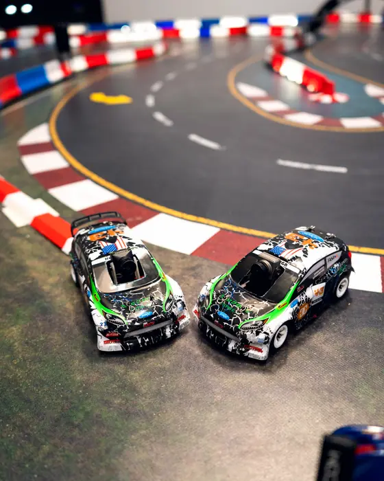
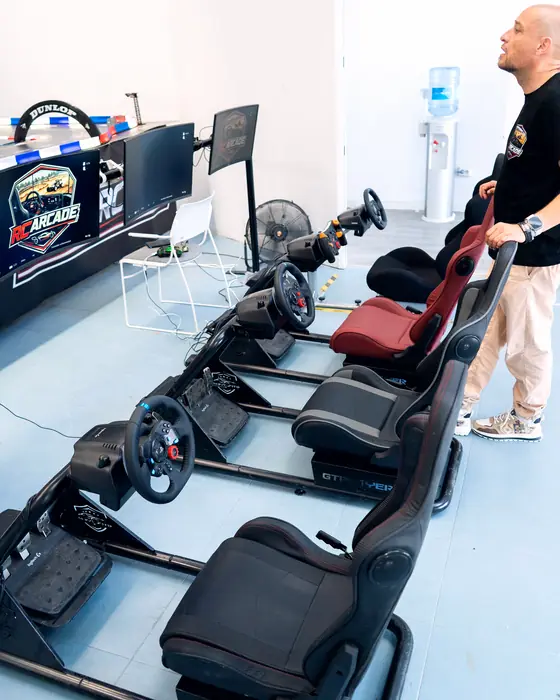
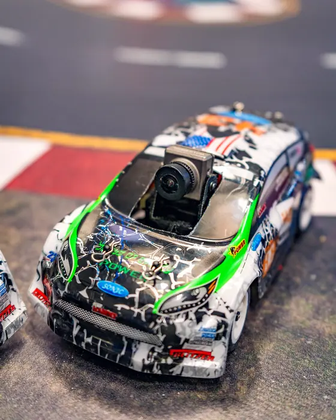
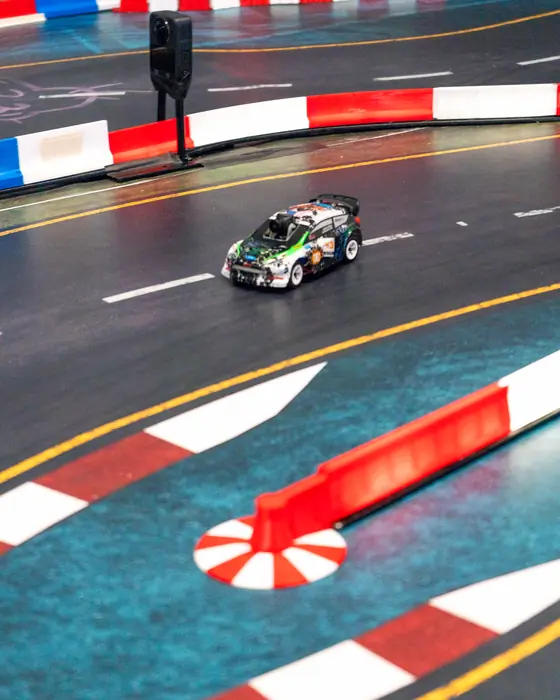
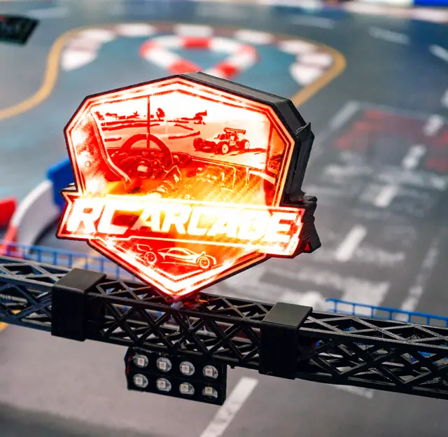
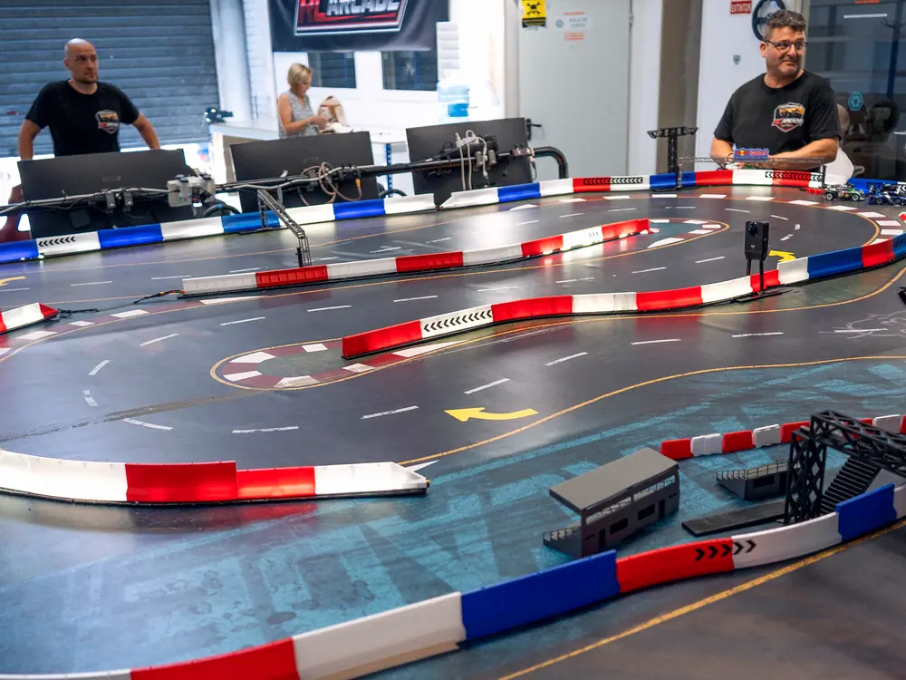

Elige
Siéntate
Conduce
Compite
EscudoCómo funciona: solo CSS (filtro de saturación 0 → 1 en 0,4 s, zoom 1,04 y un filete rojo debajo). Sin peso extra y sin JavaScript. En el móvil (sin ratón) las fotos ya salen a color, para que nadie se pierda la mejor parte. Si tu pantalla es táctil y esto se ve a color, es correcto.
Cómo funciona: la caja pasa de 70 % a pantalla completa según la rolagem. El vídeo no se descarga hasta que llegas aquí (nuestro clip pesa ~1 MB; el del sitio de referencia carga desde el principio y pesa ~10–22 MB). Con botón de pausa, sin sonido y sin movimiento si el visitante pidió «reducir animaciones».

Cómo funciona: cada línea sube desde una máscara cuando entra en pantalla; la foto se mueve un poco más despacio que la página (paralaje). Dos gestos, sin librería. Se desactiva con «reducir animaciones».
Cómo funciona: el coche queda fijo en el centro y se desliza un poco (−12 % → +12 %) mientras bajas; cada elemento de la lista se enciende al cruzar el centro de la pantalla. Maqueta: el coche es un dibujo; cuando tengamos una foto cenital real del coche, lo cambiamos. Los textos son de ejemplo.